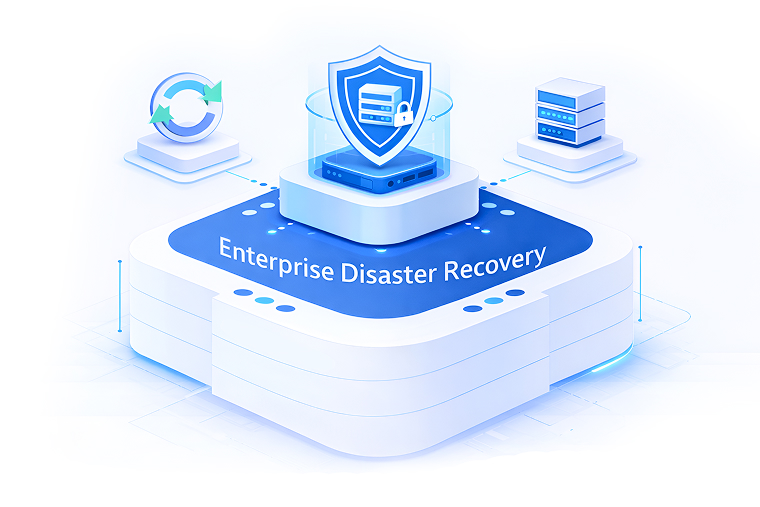

Enterprise Disaster Recovery.

Continuity Owned Before Failure Occurs.
Disaster recovery is not a backup feature.It is an operational commitment to continuity under failure, where authority, execution, and accountability must already be defined before disruption happens.
Crafthost’s Enterprise Disaster Recovery is built for organizations where outages carry regulatory, financial, or national-level consequences—and where recovery cannot depend on coordination between multiple vendors, contracts, or escalation paths.
We do not provide recovery tooling. We own recovery execution as part of enterprise infrastructure operations.
Enterprise-only · Assessment-based · SLA-drivenWhat Disaster Recovery Means at Crafthost.
At Crafthost, disaster recovery is not a document, a runbook stored in a wiki, or an optional configuration enabled after deployment.
It is a continuity operating model where:
- Failure scenarios are defined in advance
- Recovery authority is pre-assigned
- Execution paths are validated, not assumed
- Responsibility does not fragment under pressure
This eliminates the most common failure pattern in enterprise incidents: everyone knows what should happen, but no one owns execution when it does.
Designed for Failure States, Not Normal Operations.
Most infrastructures are designed to perform well when everything works.Enterprise disaster recovery must function when multiple systems fail simultaneously.
Crafthost’s model assumes:
- Partial or total site unavailability
- Control plane disruption
- Network segmentation or isolation
- Concurrent security or DDoS events
Recovery execution is built to operate inside degraded conditions, not ideal ones.
Scope of Disaster Recovery Ownership.
There is no ambiguity about who initiates or who executes recovery.
- Failure detection and classification
- Recovery decision authority
- Orchestrated failover execution
- Data integrity validation post-recovery
- Service stabilization and verification
- Business continuity policy direction
- Application-level functional testing
- Regulatory notification decisions
Recovery Is an Operational Discipline, Not a Backup Strategy.
Backups do not equal recovery. Replication does not equal continuity. Enterprise recovery requires:
- Defined Recovery Time Objectives (RTO) aligned to operations
- Recovery Point Objectives (RPO) validated under load
- Controlled execution paths tested against real failure scenarios
- Clear authority to act without escalation delays
Crafthost treats recovery as an operational discipline, not a storage configuration.
When Enterprise Disaster Recovery Is Required.
This solution is designed for organizations that:
- Operate mission-critical digital services
- Have regulatory or contractual uptime obligations
- Cannot tolerate extended service degradation
- Require deterministic recovery authority
If recovery is expected to be improvised during incidents, this model is unnecessary. If recovery must be executed reliably under pressure, escalation-based approaches are insufficient.
Proven Outcomes in Enterprise Environments.
Organizations operating under Crafthost’s disaster recovery model have observed:
- 25–40% reduction in recovery execution time during major incidents
- Elimination of recovery-stage responsibility disputes
- Predictable service restoration under multi-component failure scenarios
Engagement Model.
Crafthost disaster recovery engagements follow a structured process:

Incident response and recovery execution are handled as a single operational chain.
Request Disaster Recovery AssessmentRelationship to Other Enterprise Security Capabilities.
Enterprise DDoS Protection operates as part of Crafthost’s broader security and operations framework: